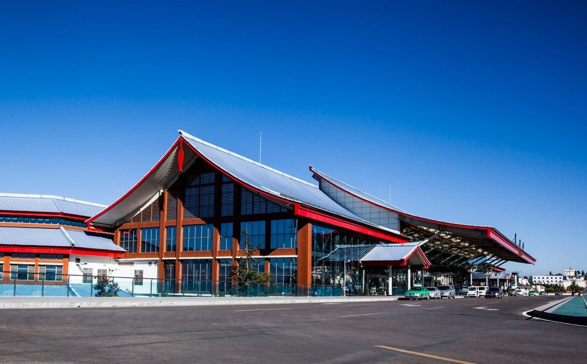
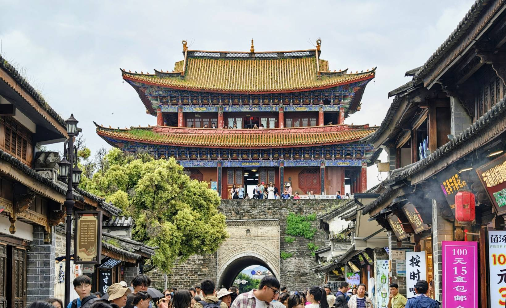
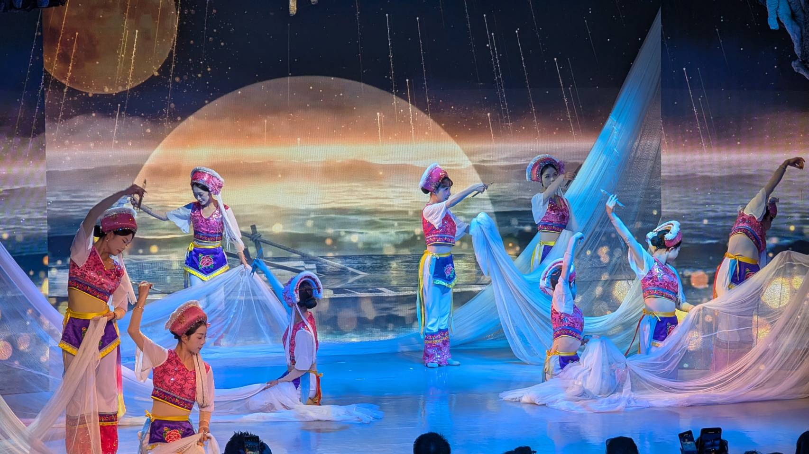
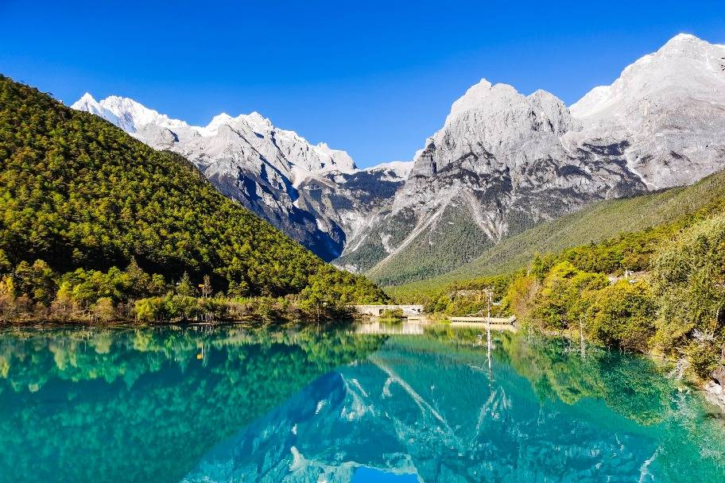
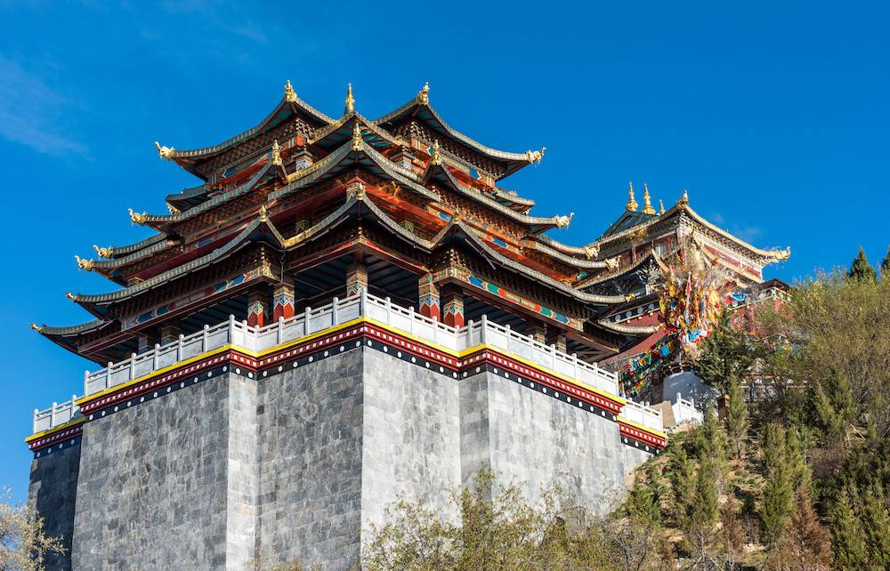
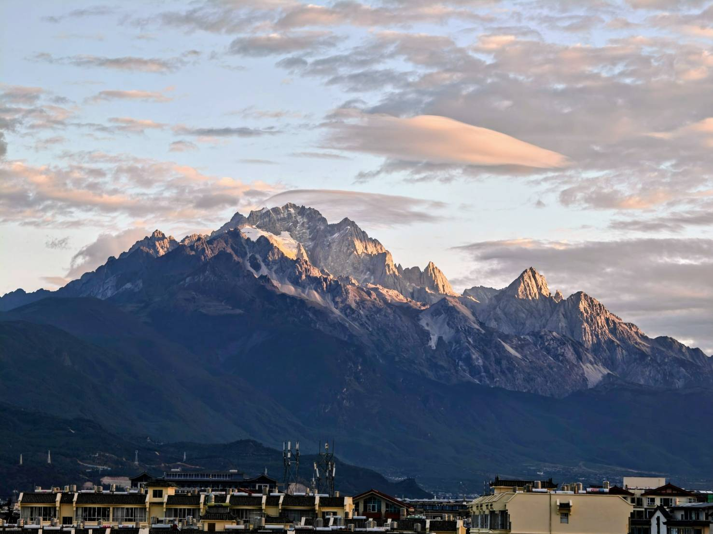
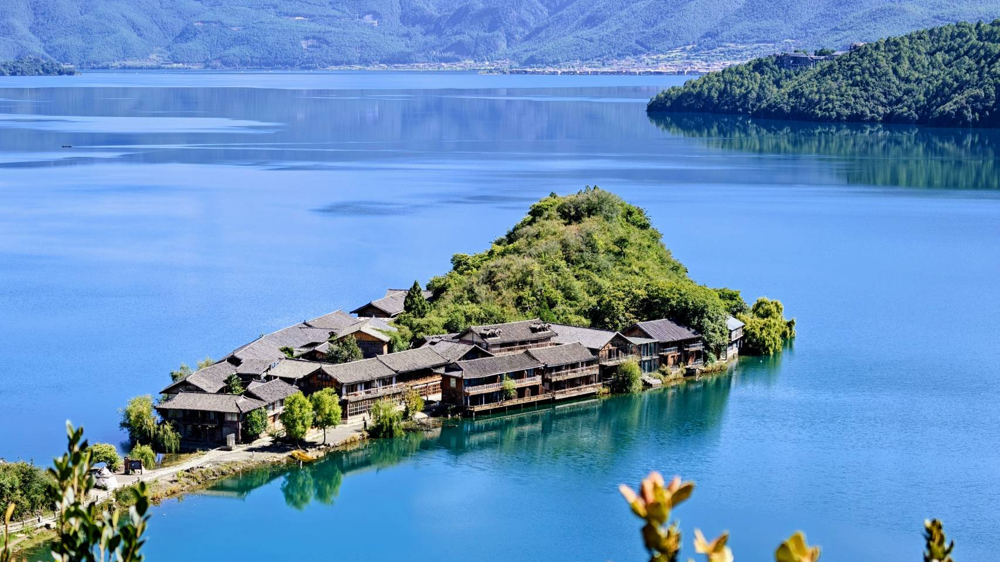
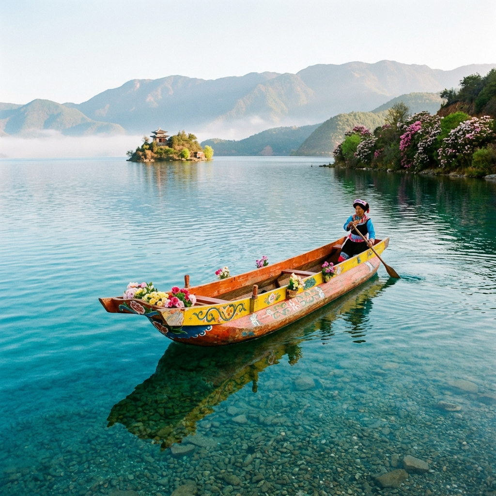
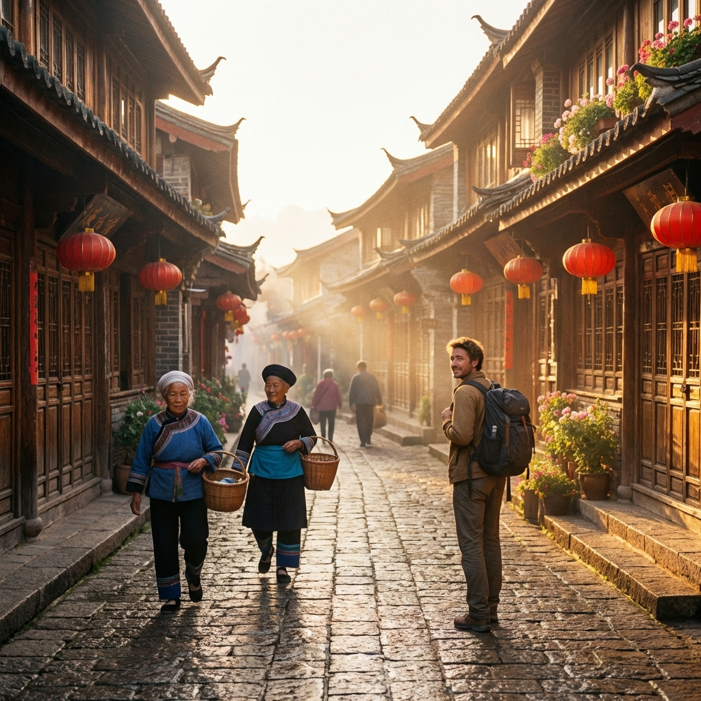

抵達麗江．高原啟程
交通路線 / 途經
台北 - 香港 - 麗江
"從台北出發，經香港轉機抵達雲南的明珠——麗江。麗江古城擁有 800 多年歷史，是絲綢之路與茶馬古道的重要樞紐。入住後可先在納西族的青石板路上漫步，感受家家流水、戶戶垂柳的悠閒氣息，並在靜謐的古鎮氛圍中，讓身體逐步適應海拔 2400 米的高原環境。"
今日行程亮點

大理風情．古城漫步
交通路線 / 途經
麗江 - 大理拉市海 - 大理古城
"前往「風花雪月」的大理。首先來到拉市海濕地，看候鳥與草海共舞。隨後進入大理古城，這裡背靠蒼山、面朝洱海，古城內青瓦白牆的白族建築錯落有致。走在洋人街上，您可以品嚐道地的乳扇、雕梅，感受與麗江截然不同的靜謐與文藝，沉浸在南詔古國的懷舊時光中。"
今日行程亮點

洱海之光．金梭傳奇
交通路線 / 途經
大理 - 金梭島 - 洱海 - 麗江古鎮
"搭乘擺渡船登上洱海最大的島嶼——金梭島，探索隱藏在島下的「龍宮」鐘乳石洞穴，驚嘆於大自然的鬼斧神工。特別安排觀賞非物質文化遺產「海菜花」歌舞表演，透過當地白族居民的傳統舞姿，述說著對這片純淨水源的敬畏。傍晚迎著夕陽回到麗江，感受洱海邊水天一色的極致浪漫。"
今日行程亮點

神聖雪山．藍月秘境
交通路線 / 途經
玉龍雪山 - 藍月谷 - 束河古鎮
"挑戰海拔，搭乘索道登上北半球緯度最低的玉龍雪山。隨後漫步於山腳下的藍月谷，這裡的湖水富含銅離子，呈現出如蒂芙尼藍般的夢幻色澤，襯著背後的皚皚雪山，美如人間仙境。下山後轉往束河古鎮，避開人群，在茶馬古道最完整的古鎮驛站中，享受古橋、流水的片刻寧靜。"
今日行程亮點

朝聖之旅．香格里拉
交通路線 / 途經
麗江 - 虎跳峽 - 納帕海 - 松贊林寺 - 獨克宗古城
"進入詹姆斯希爾頓筆下的「心中的日月」。在虎跳峽感受金沙江咆哮而過的震撼力量。隨後參訪松贊林寺，這座宏偉的藏傳佛教寺院依山而建，金碧輝煌的屋頂在陽光下熠熠生輝，被譽為「小布達拉宮」。最後在獨克宗古城轉動世界上最大的轉經筒，為自己與家人祈求吉祥與福報。"
今日行程亮點

國家公園．自然洗禮
交通路線 / 途經
普達措國家公園 - 屬都湖 - 碧塔海 - 麗江
"普達措在藏語中意為「普度眾生到達彼岸」。這裡擁有原始的森林、高原濕地與絕美湖泊。走在屬都湖邊的木棧道上，您能見到可愛的小松鼠在林間穿梭，氂牛在草甸上悠閒覓食。這裡的空氣負離子含量極高，是一次身心靈的深呼吸之旅，讓您在純淨的自然律動中洗去疲憊，下午滿載芬多精回到麗江。"
今日行程亮點

女兒國度．瀘沽湖
交通路線 / 途經
麗江 - 瀘沽湖觀景台 - 草海 - 情人橋
"前往川滇交界的神祕湖泊——瀘沽湖。這裡是母系社會「摩梭人」的聚居地，擁有流傳千年的走婚習俗。漫步在金黃色的草海與象徵愛情的走婚橋，湖面上點綴著如白色珍珠般的波葉海菜花。晚上參加熱情的篝火晚會，與摩梭阿哥阿妹一起跳著甲搓舞，感受這個東方女兒國最淳樸、最熱情的民族生命力。"
今日行程亮點

湖光山色．麗江印象
交通路線 / 途經
瀘沽湖豬槽船 - 里務比島 - 麗江金沙秀
"早起搭乘傳統的「豬槽船」划向湖心，清晨的霧氣籠罩在里務比島，彷彿置身於蓬萊仙境。登島參觀里務比寺，俯瞰湛藍如藍寶石般的湖水。回程麗江後，晚上欣賞《麗江金沙》大型歌舞表演，透過頂尖的聲光效果與數百位舞者的精湛演出，深入了解雲南少數民族千年的遷徙歷史、民俗風情與永恆的愛情史詩。"
今日行程亮點

珍重再見．圓滿歸途
交通路線 / 途經
麗江 - 香港 - 台北
"旅程來到最後一天，在麗江的晨曦中享受悠閒早餐，選購一些普洱茶、鮮花餅或手工銀飾作為旅遊紀念。隨後帶著滿滿的感動與數千張珍貴照片，前往三義機場經香港轉機飛往台北。雖然這趟橫跨雪山與湖泊的朝聖之旅即將劃下句點，但雲南那抹純淨的蔚藍，將永遠留在您的心靈深處。"
今日行程亮點
行前溫馨提醒
做好充分準備，讓旅程更加完美
高反預防
香格里拉海拔約 3300 米。建議抵達初期多喝水、少運動，不建議抵達首晚洗頭，以防感冒引發高原反應。
穿搭建議
雲南早晚溫差大。請採用洋蔥式穿法，玉龍雪山與國家公園區域氣溫極低，務必攜帶防風、防水的加厚外套。
高原防曬
高海拔地區紫外線強烈。墨鏡、遮陽帽、高效防曬乳為必備品，以免曬傷。同時氣候乾燥，護唇膏與補水噴霧也非常實用。